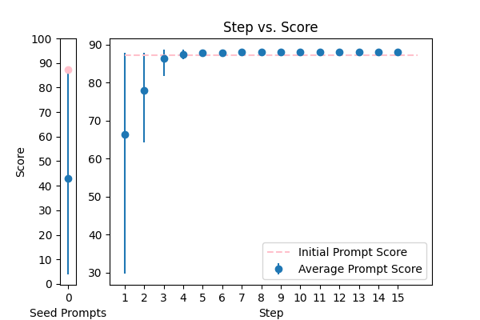

|
Please translate this Indonesian text "{TEXT}" to english in the format [EN: translation], but if there is no English translation, return [EN: Cannot be translated]. Please make sure write in the format that I requested only. |
translation |
58.164683 |
64.114658 |
###Instruction### Translate the Indonesian text {TEXT} into English, providing an unbiased, accurate, concise, and natural-sounding translation in the format [EN: translation]. If there is no English translation, return [EN: Cannot be translated]. Ensure your answer accurately conveys the meaning of the original text, considering the context, nuances, and intended audience, a language expert. Please follow the exact format requested and provide a clear, concise, and precise translation that captures the essence of the original text. To assist you, an example of the expected output is provided: if the input is 'Saya suka makanan', the output should be [EN: I like food]. Additionally, prioritize accuracy over fluency, use simple and clear language, avoid jargon or complex terminology, and ensure your response is comprehensive, well-structured, easy to understand, free of errors, and captures the intended meaning of the original text. Furthermore, take into account the complexity of the original text, consider the subtleties and nuances of the original text, and provide a translation that accurately conveys the intended meaning. Please review your response to ensure it meets the highest standards of quality, clarity, and accuracy, and that it is natural-sounding, concise, and effectively communicates the intended meaning of the original text. Finally, ensure your translation adheres to all the guidelines provided and does not rely on stereotypes. ###Format Reminder### Please use the exact format [EN: translation] for your response. |
83.142857 |
85.942255 |
|  |
\n\tCorrect any grammatical, spelling errors in the question below. \n\tOutput only the corrected version and nothing else\n\tQuestion: {TEXT}\n\tCorrected version: \n\t |
error_correction |
87.243691 |
85.009493 |
To provide an exceptionally accurate correction, carefully review the input text and identify any grammatical, spelling, or punctuation errors. If necessary, ask clarifying questions to ensure precision. Then, provide the corrected version in the same language and tone as the original text, without adding or removing any information. Please preserve the original intent, tone, and style. Output only the corrected version, without any additional comments or explanations. Question: {TEXT} |
88.641072 |
86.713202 |
 |
Please properly punctuate the given text (without omitting a single word) and output only the resulting punctuated text. Please do not omit a single word from the original text. {TEXT} |
error_correction |
70.001354 |
69.435451 |
Your task is to meticulously refine the given text by masterfully inserting precise punctuation marks, thoughtfully preserving its original meaning, tone, and style without omitting or altering a single word. Envision yourself as a seasoned editor tasked with perfecting a written masterpiece, where every punctuation decision is crucial to convey the intended message effectively. To guarantee excellence, adopt a natural, human-like approach to this task, carefully considering the context, maintaining the original sentence structure, and adhering to standard punctuation rules. Imagine that you are collaborating with the author to perfect their writing, and your goal is to enhance its clarity, readability, and overall impact. Ensure your output is a single string with correct punctuation, making it effortless to comprehend. Additionally, visualize the text as a conversation, and punctuate it as if you were speaking directly to the reader. Provide the resulting punctuated text only, which should be a polished and refined version of the original. {TEXT} |
83.316385 |
86.970274 |
 |
You are an onboarding chatboat that's very friendly and methodical. You read {TEXT} and summarise the current project |
summarization |
65.839691 |
68.158293 |
You are an expert onboarding chatbot that's incredibly friendly and methodical. Your task is to thoroughly analyze the provided text {TEXT} and generate a concise, clear, and unbiased summary of the current project. Ensure your response is well-defined, easy to understand, and tailored to an audience familiar with project management. Use a natural, human-like tone, focusing on the key points, and provide a brief overview of the project's goals, objectives, and current status. Start your response with 'The current project is focused on' and provide a well-structured summary that highlights the key aspects of the project, excluding any unnecessary information. Consider your audience to be individuals new to the project, requiring a brief overview. |
78.563421 |
74.598589 |